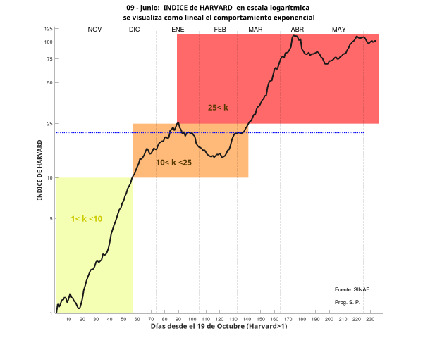

Indice
de Harvard al 7 de junio =====>
Preocupados todos por la pandemia y
bombardeados a diario por cifras y modelos,
decidí en julio/2020 escribir una nota mensual para
viejos amigos, familia y vecinos.
Lego en Ciencias Biológicas y de la
Salud me propuse:
 Aún en
construcción
Aún en
construcción